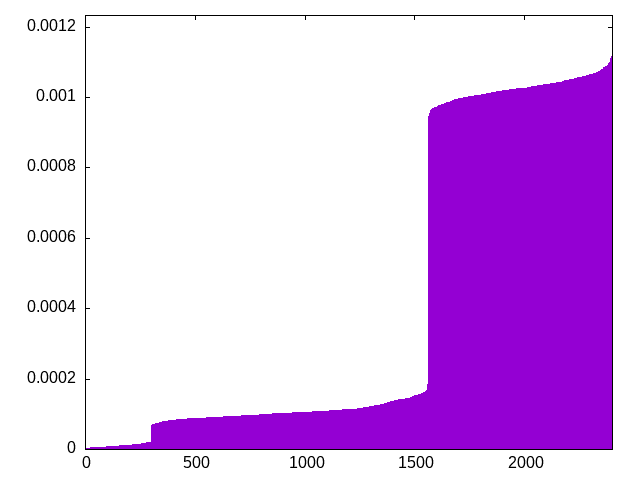
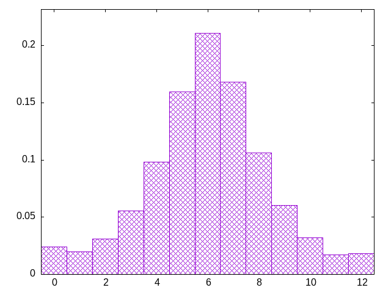
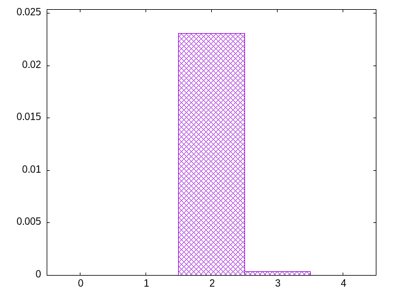

weight according to recentness -- multiplicative
oitjslziotjslzoitslzotijjzosjttllzoiijtsjlzotisjloszijtozijlztsozijsljtzsoitljoiztjisoztlsjizltsiiolojtzislotjzisojltijzsoijltzsijolzittsljozisltjolizstoizjlztsjitolzjlsiojztzjliszjotlsjiozostlsojziosljtzoisljtozitsoljitzozojitszljolsizotlsjzziotilsjztoilostjzliojtzijlsosztojisolztijoslztjitolszjisoljtizosztjlitzsiljotzsojitlssozjitslozisjtlozislojtiolsjiztzlsizotjisollztjilztijsozstoijllzlsottjistzljolsizotjloszisitjloizsijotzsliojstozlisojzltisjoztlijotliosszjtlojziltsjoztlijsjozlijosttizsljostitlzjosiiotljizostjlziolstjizoslotzijltosszijotlzsoiljztsjzotiszljotizssotijslzltojooiztlssjoiztjzslstolijtsljzzoistolljizosltizojsziljtozlsjitolojzstljoizzsitljoztoiljsjzltojiltzsojilztsoijzltzjsoilztjsoitlsjzitsjsoilztjsiztojlizstjoiltosjzioltszjsiloztjsoiztlitszljolijtoszijltziisjolzoiszttijltosizjltsizojlstjiszoljitzslijotslzijstolzjitzljtjssooizltjsjiotztsjtliistzolojslsiitzojtliszjotslijzoztsltzijolsitjszoliojtszliotzlijstozlitzjosliotzljoszitjztlojistzoljsizotljsizostlsjzilotsizlojtsszoj
bagginess: 0.2730
bagginess6: 0.8502
distribution1_maxgap: 8.099999999999774e-05
distribution2_maxgap: 0.019353019353019352
distribution3_maxgap: 0.003583007166014332
distribution4_maxgap: 0.0007470022410067231
diversity: 6.1
entropy: 10.148
evenness_diff: 5.937
evenness_same: 4.062
maxdrought: 12.0
maxflood: 4
peakdrought: 6.0
repchance: 0.0238
seq4_coverage: 0.9992
seq4_follow: 8.000
distribution4_graph:

drought_graph:

flood_graph:

similarity: (lower is more similar)
| 0.007 | weight_exp_pure |
| 0.047 | shift3_5 |
| 0.054 | bag |
| 0.054 | bag_pure |
| 0.057 | ti |
| 0.064 | seamless_bag_pure |
| 0.077 | tgm |
| 0.082 | tgm_tap |
| 0.084 | tgm_pure |
| 0.087 | tgm_tap_pure |
| 0.155 | weight |
| 0.257 | weight2 |
| 0.312 | weight_lin_pure |
| 0.325 | deepbag_window4 |
| 0.331 | balanced5 |
| 0.357 | seamless_deep_pure |
| 0.370 | wet2 |
| 0.382 | deepbag_fixed4 |
| 0.507 | bag2 |
| 0.515 | shift7 |
| 0.532 | deepbag_fixed7 |
| 0.668 | wet_pure |
| 0.674 | seamless_bag2_pure |
| 0.763 | balanced7 |
| 0.767 | deepbag_window7 |
| 0.853 | nes_pure |
| 0.857 | shift10_5 |
| 0.860 | seamless_bag3_pure |
| 0.864 | bag3 |
| 0.874 | wet |
| 0.878 | deepbag_fixed10 |
| 0.895 | nes |
| 0.896 | deepbag_window10 |
| 0.925 | balanced9 |
| 0.956 | shift14 |
| 0.963 | bag4 |
| 1.023 | balanced_long_add_pure |
| 1.040 | shift21 |
| 1.087 | balanced_long_mul_pure |
| 1.345 | fullrandom |
| 1.345 | fullrandom_pure |
| 1.376 | shift1_75 |
| 3.328 | repeat_recent_pure |
| 5.425 | repeat_last_pure |
| 6.613 | flatbag |
| 6.613 | flatbag_pure |